12.Tourism and its influence in the knowledge society
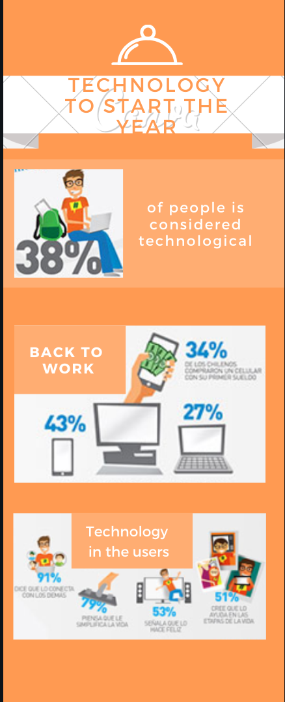 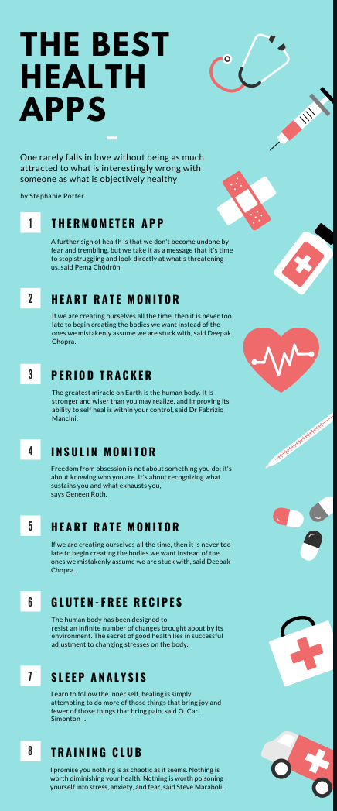
 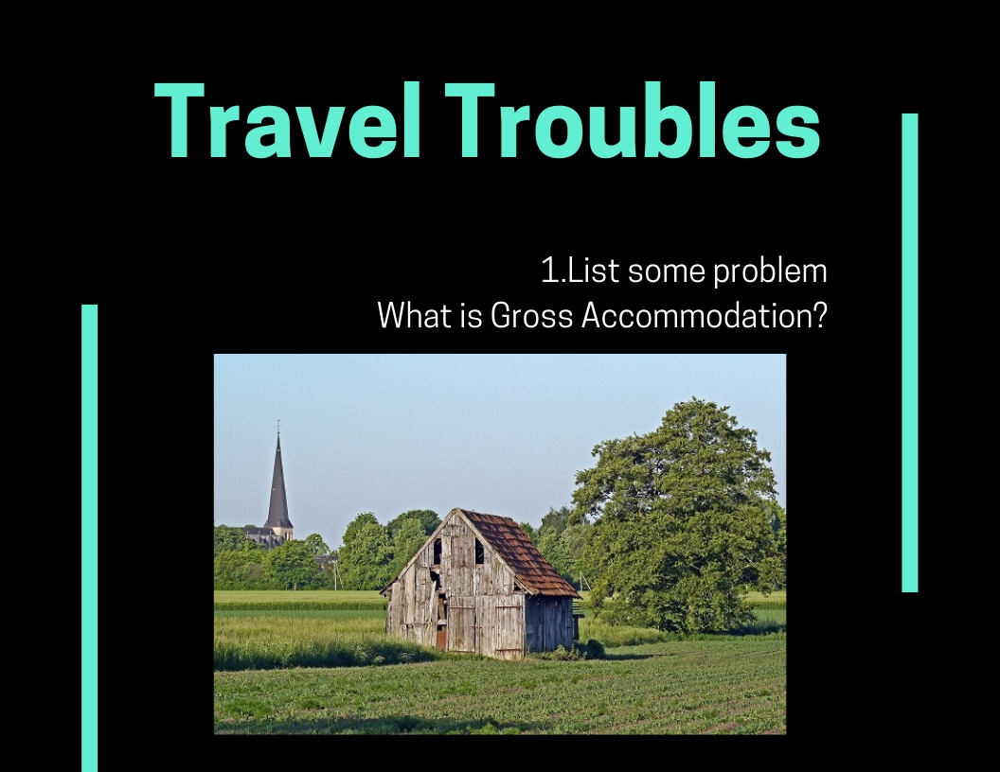
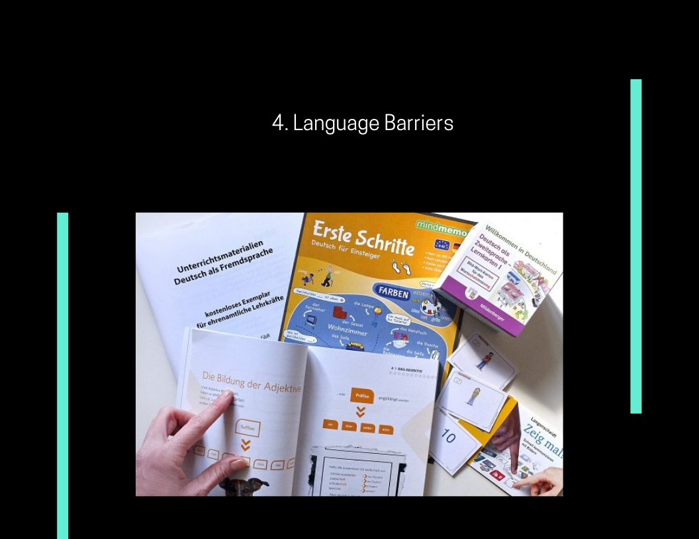
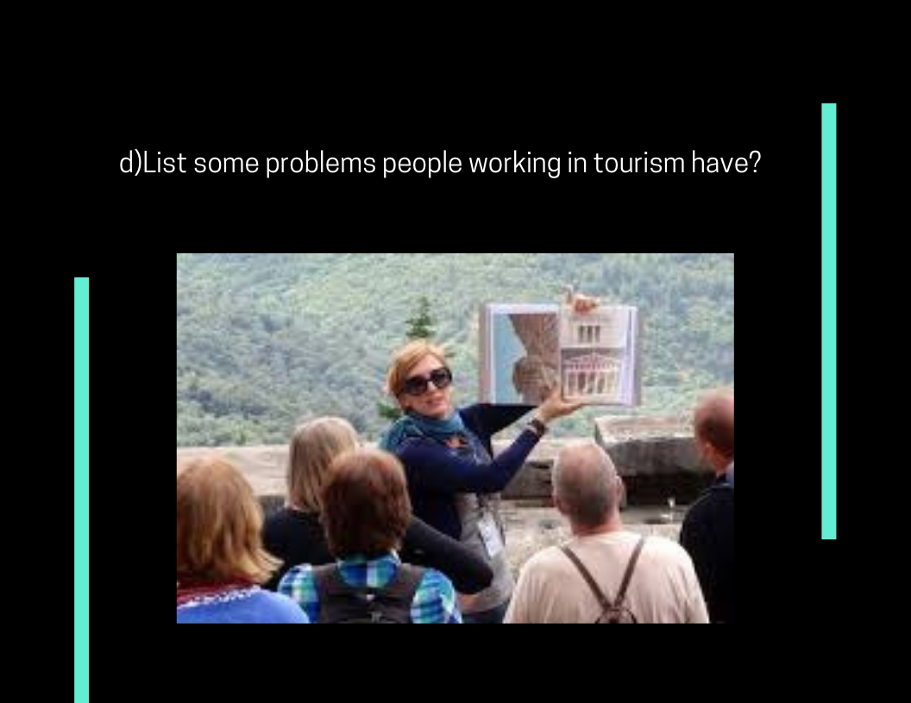
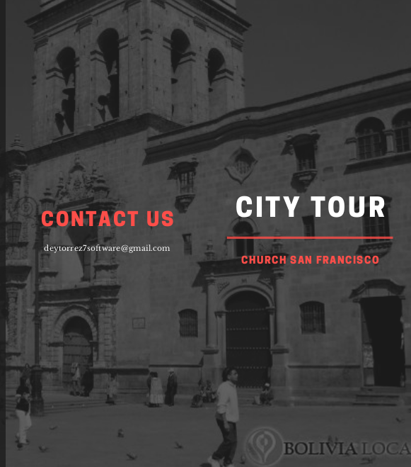
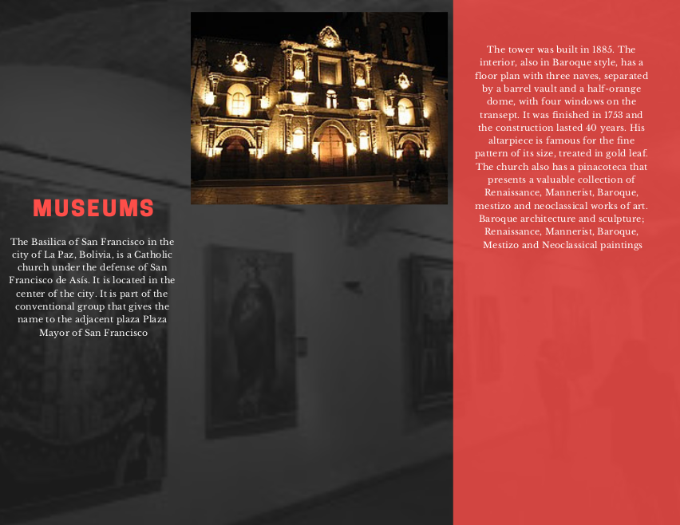
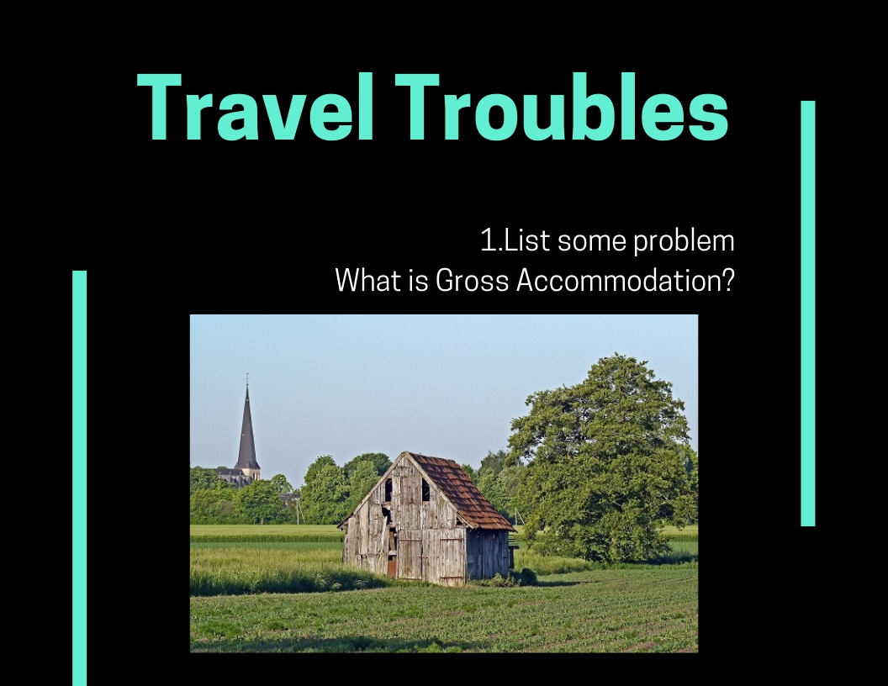
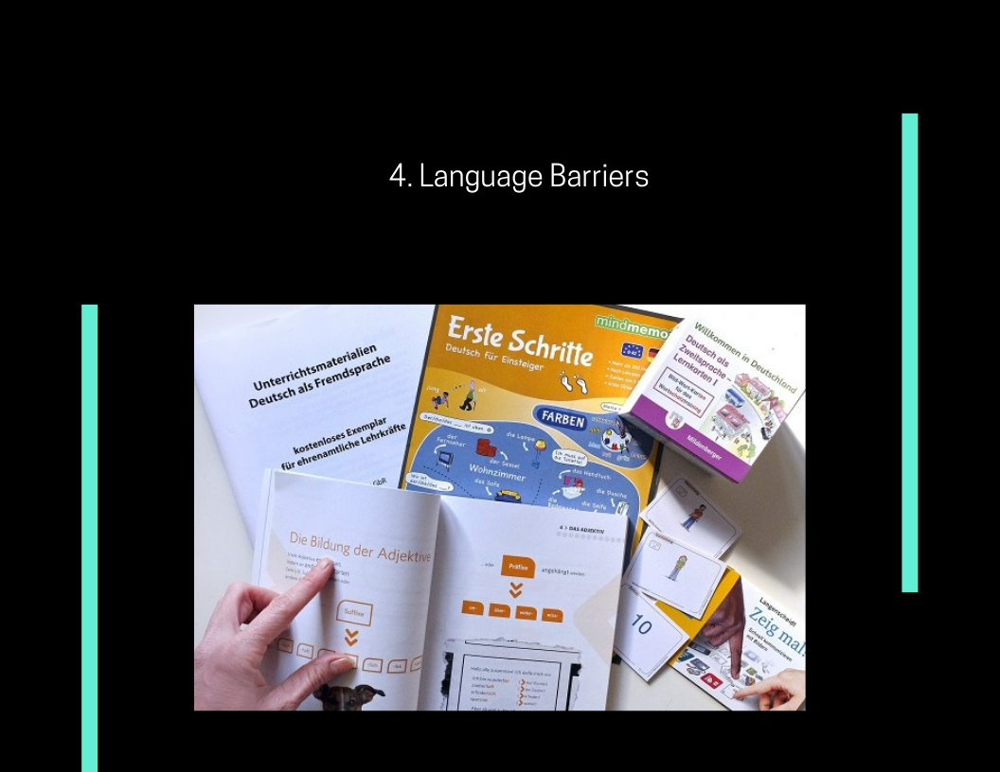
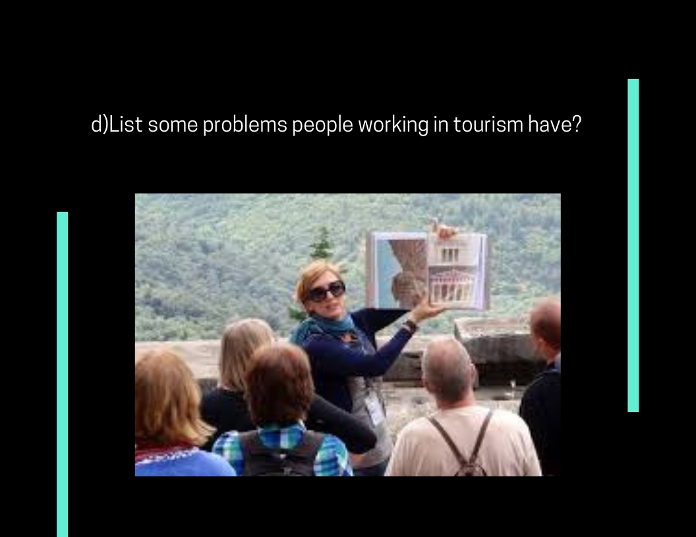
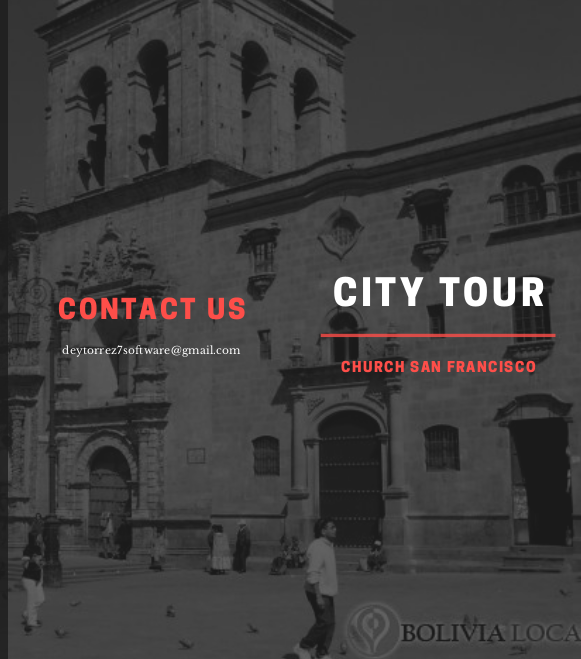
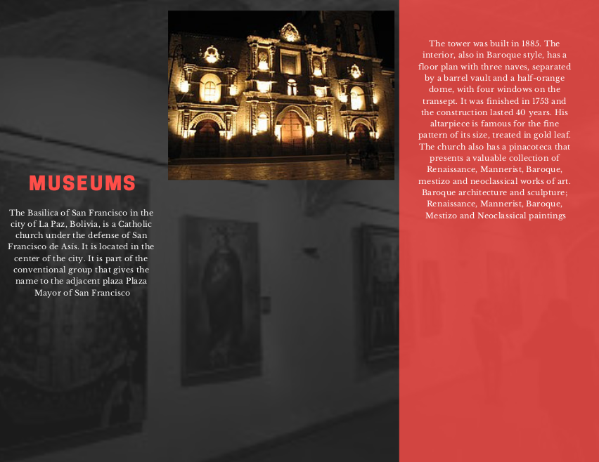
Facebook artificial intelligence in the next 10 years.
MENLO PARK, Calif. — Mike Schroepfer, Facebook’s chief technology officer, was tearing up. For half an hour, we had been sitting in a conference room at Facebook’s headquarters, surrounded by whiteboards covered in blue and red marker, discussing the technical difficulties of removing toxic content from the social network. Then we brought up an episode where the challenges had proved insurmountable: the shootings in Christchurch, New Zealand.
In March, a gunman had killed 51 people in two mosques there and live streamed it on Facebook. It took the company roughly an hour to remove the video from its site. By then, the bloody footage had spread across social media.
Mr. Schroepfer went quiet. His eyes began to glisten. “We’re working on this right now,” he said after a minute, trying to remain composed. “It won’t be fixed tomorrow. But I do not want to have this conversation again six months from now. We can do a much, much better job of catching this.”
The question is whether that is really true or if Facebook is kidding itself. For the past three years, the social network has been under scrutiny for the proliferation of false, misleading and inappropriate content that people publish on its site. In response, Mark Zuckerberg, Facebook’s chief executive, has invoked a technology that he says will help eliminate the problematic posts: artificial intelligence.
Before Congress last year, Mr. Zuckerberg testified that Facebook was developing machine-based systems to “identify certain classes of bad activity” and declared that “over a five- to 10-year period, we will have A.I. tools” that can detect and remove hate speech. He has since blithely repeated these claims with the media, on conference calls with Wall Street and at Facebook’s own events.
Questions
- 1. What is augmented reality?
- 2. What is tripAdvisor?
- 3. How important is mobile technology in tourism?
Vocabulary
- TripAdvisor:
It is a US website that provides reviews of travel-related content.
- Peak season: This is the time of year when the most people are traveling.
- Goods :
Items for sale, or possessions that can be moved.
- Knowledge society:
The notion of the knowledge society is an innovation of information and
communication technologies, where the transfers of information are published,
modified in many ways the way in which activities in modern society.
Peter Drucker, those ideas were decisive in the creation of the modern Corporation,
who was the first in which one speaks of "knowledge worker"
and today is considered the father of management as the discipline.
- By Deymar Torrez